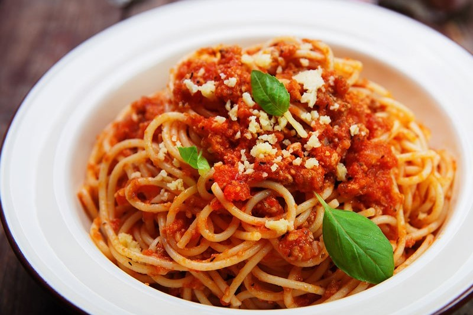

Spaghetti
Prep : 10 min | Cook : 20 min
--------------------------------------------------------
Ingredient List:
1 1/2 Package Sauce
1 Onion (diced)
1 Package Italian Sausage
Basil Leaves
Spaghetti Noodles
Instructions:
1.) Sauté onions.
2.) Add Italian sausage and break apart.
3.) Add sauce after sausage is 80% cooked.
4.) Cover on low for 15 minutes.
5.) Add chopped basil as garnish